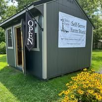

From Champaign
Head north-west out of town and the road soon opens into farmland. County Road 2200 N runs across it, and the stand is at the end of our drive.
Directions from ChampaignThe stand sits at the end of the drive on County Road 2200 N, just north-west of Champaign. Come any day of the week, take your time, and pay however suits you.
Everything you need for the drive out, and how to reach us if you would rather ask first.
Open daily, 9:00 AM – 7:00 PM
Self-serve, seven days a week
Cash box on site, or Venmo, Cash App and Zelle. Honor system, always.

We are out among the fields, so the drive is an easy one whichever way you come. Tap through on any card below for turn-by-turn directions from your side of the county.
Head north-west out of town and the road soon opens into farmland. County Road 2200 N runs across it, and the stand is at the end of our drive.
Directions from ChampaignYou will cross through Champaign first, then carry on north-west until the houses give way to open fields and the county roads take over.
Directions from UrbanaA quiet, straightforward run on the county roads once you are clear of town. Set the address in your map app and it will handle the turns.
Directions from Mahomet

Outside and in, so you know the place when you pull up.
There is no cashier and no line. The stand is open whether we are out there or not, and folks have never given us a reason to change that.
Seven days a week, rain or shine. Pull in at the stand on County Road 2200 N and take as long as you like.
Eggs in the cooler, honey and gifts on the shelves, produce and flowers out front. Prices are marked on everything.
Leave cash in the box, or send it over from your phone before you pull away. That is the whole checkout.
“Take what you need, leave what it’s worth, and we’ll see you next week.”
Nothing complicated, but here is the shape of it so you know what you are pulling into.
Pull in off the road at the stand and park where it suits you. It is a quiet stretch of County Road 2200 N, so there is no need to hurry.
The stand looks after itself, but we are a phone call away on (217) 898-9387 if there is anything you would rather ask before you set off.
Children are very welcome. The hens are usually out roaming the yard, and they tend to be the reason nobody wants to leave.
The table shifts as the year turns. Come winter the produce rests and the stand leans on honey, luffa soaps, greeting cards and vanilla extract, while the eggs keep coming.
And if yours is not here, Facebook or email will always reach us.
No. There is a cash box at the stand if cash suits you, and we also take Venmo, Cash App and Zelle, so you can settle up from your phone before you pull away.
The stand is self-serve and open daily, 9 AM to 7 PM. Around the major holidays it is worth sending us a message on Facebook to confirm before you make the trip.
Yes, just ask. Send us a message on Facebook or email sliferfarmeggs@gmail.com and we will let you know what we can set aside for you.
Very much so. Little ones are welcome at the stand, and the hens are usually out in the yard, which tends to be the best part of the visit.
Stock changes from day to day, so an empty shelf usually fills back up before long. Facebook has the day’s update and is the quickest way to see what is on the stand before you set off.